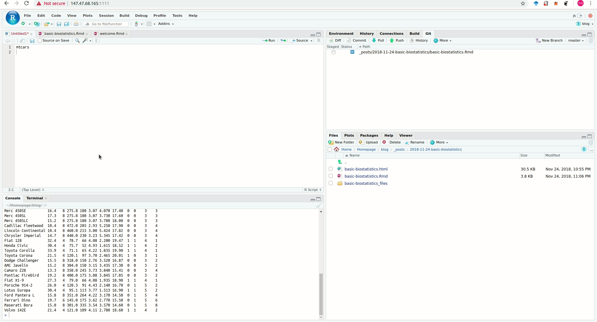

RStudio Addins and Shiny Modules for Medical Research
Install
install.packages("jsmodule")
library(jsmodule)
## From github: latest version
remotes::install_github('jinseob2kim/jsmodule')RStudio Addins
Basic statistics
Use jsBasicGadget(data) or Click Basic statistics Addin with the dragged name of data.
jsBasicGadget(mtcars)
Basic statistics with external data
Use jsBasicExtAddin() or Click Basic statistics with external data Addin without any drag
Repeated measure analysis
Use jsRepeatedGadget(data) or Click Repeated measure analysis Addin with the dragged name of data.
jsRepeatedGadget(mtcars)Repeated measure analysis with external data
Use jsRepeatedExtAddin() or Click Repeated measure analysis with external data Addin without any drag
Survey data analysis
Use jsSurveyGadget(data) or Click Survey data analysis Addin with the dragged name of data.
library(survey)
data(api)
jsSurveyGadget(apistrat)Survey data analysis with external data
Use jsSurveyExtAddin() or Click Survey data analysis with external data Addin without any drag
Propensity score analysis
Use jsPropensityGadget(data) or Click Propensity score analysis Addin with the dragged name of data.
jsPropensityGadget(mtcars)
Propensity score analysis with external data
Use jsPropensityExtAddin() or Click Propensity score analysis with external data Addin without any drag